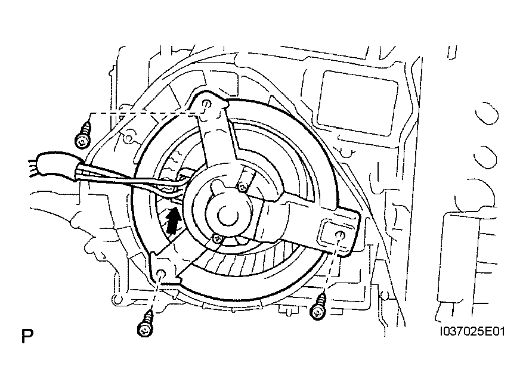

Blower Motor: Installation
INSTALL BLOWER WITH FAN MOTOR SUBASSEMBLY
Install the blower motor with the 3 screws.
Connect the connector.
INSTALL ECM (See
INSTALLATION
)
INSTALL ECM COVER (See
INSTALLATION
)
Fig 1: Installing Blower Motor With 3 Screws

Courtesy of © TOYOTA, LICENSE AGREEMENT TMS1002